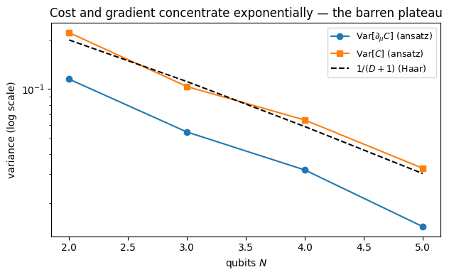

Barren Plateaus: When Scrambling Kills Trainability
This is the worked solution to the barren-plateau exercise of Chapter 7 — and the deliberate mirror of the QFI-protection exercise of Chapter 6. There, driving a state to the Haar/2-design limit protected metrological information. Here, the same second-moment concentration destroys the trainability of a variational quantum circuit. One calculation, opposite sign of usefulness: typicality is simultaneously a resource and an obstacle.
Background
A variational quantum algorithm minimizes a cost \(C(\boldsymbol\theta)=\langle\psi_0|\hat U^\dagger(\boldsymbol\theta)\,\hat O\,\hat U(\boldsymbol\theta)|\psi_0\rangle\) over circuit parameters \(\boldsymbol\theta\). Training needs a gradient with a usable signal. The barren-plateau phenomenon (McClean et al. 2018) is that for an expressive enough ansatz — deep enough that \(\hat U(\boldsymbol\theta)\) behaves like a Haar-random unitary — the cost and its gradient concentrate exponentially around their mean: almost every parameter setting returns almost the same value, so the landscape is flat and gradient descent has nothing to descend. The mechanism is exactly the concentration of measure that made a single Haar-typical scrambler stand in for the ensemble in Chapter 6.
Exercise
Let \(\hat U\) be Haar-random on \(D=2^N\) dimensions, \(\rho=|\psi_0\rangle\langle\psi_0|\) a fixed pure input, and \(\hat O\) a traceless observable. For \(C=\mathrm{Tr}[\hat O\,\hat U\rho\hat U^\dagger]\): 1. Show \(\mathbb{E}_{\hat U}[C]=0\) and \(\mathrm{Var}_{\hat U}[C]=\dfrac{\mathrm{Tr}(\hat O^2)}{D(D+1)}\). 2. Explain why this is a barren plateau: for any bounded-norm observable the variance is \(\mathcal{O}(2^{-N})\). 3. Show that observable locality alone does not help at the deep limit (a local and a global Pauli give the same variance), and state what the actual escape route (shallow, local ansätze) requires.
Toolbox
Second moment of a Haar-scrambled pure state. For \(\rho=|\psi_0\rangle\langle\psi_0|\), \[\mathbb{E}_{\hat U}\big[(\hat U\rho\hat U^\dagger)^{\otimes2}\big]=\frac{\mathbb{1}+\mathbb{S}}{D(D+1)},\] the normalized projector onto the symmetric subspace of two copies (Chapter 3). This is the entire input to the calculation. Swap trick:\(\mathrm{Tr}[(\hat A\otimes\hat B)\mathbb{S}]=\mathrm{Tr}[\hat A\hat B]\).
Solution
Mean
\(\mathbb{E}_{\hat U}[C]=\mathrm{Tr}[\hat O\,\mathbb{E}_{\hat U}(\hat U\rho\hat U^\dagger)]=\mathrm{Tr}[\hat O\,\tfrac{\mathbb{1}}{D}]=\tfrac{\mathrm{Tr}\hat O}{D}=0\) because \(\hat O\) is traceless (the first Haar moment sends any state to the maximally mixed one).
Second moment and variance
Writing \(C^2=\mathrm{Tr}[(\hat O\otimes\hat O)(\hat U\rho\hat U^\dagger)^{\otimes2}]\) and averaging, \[\mathbb{E}_{\hat U}[C^2]=\mathrm{Tr}\!\Big[(\hat O\otimes\hat O)\tfrac{\mathbb{1}+\mathbb{S}}{D(D+1)}\Big]
=\frac{\mathrm{Tr}[\hat O\otimes\hat O]+\mathrm{Tr}[(\hat O\otimes\hat O)\mathbb{S}]}{D(D+1)}
=\frac{(\mathrm{Tr}\hat O)^2+\mathrm{Tr}[\hat O^2]}{D(D+1)}.\] Since \(\mathbb{E}[C]=0\) and \(\mathrm{Tr}\hat O=0\), \[\boxed{\;\mathrm{Var}_{\hat U}[C]=\mathbb{E}[C^2]=\frac{\mathrm{Tr}(\hat O^2)}{D(D+1)}.\;}\]
Why it is a plateau, and why locality does not save it
For any observable with \(\|\hat O\|\le1\), \(\mathrm{Tr}(\hat O^2)\le D\), so \(\mathrm{Var}[C]\le \tfrac{1}{D+1}=\mathcal{O}(2^{-N})\): the cost is exponentially concentrated. The gradient inherits the same scale, so its typical magnitude is \(\sim 2^{-N/2}\) and vanishes into the sampling noise.
The tempting rescue — “measure a local observable” — fails at the deep limit. A single Pauli string, local (\(\hat Z_1\)) or global (\(\hat Z^{\otimes N}\)), has \(\mathrm{Tr}(\hat O^2)=D\) either way, so both give \(\mathrm{Var}[C]=1/(D+1)\). Locality helps only when the ansatz is shallow and built from local blocks that each form their own \(2\)-design; then a local cost has variance polynomial in \(1/N\) up to \(\mathcal{O}(\log N)\) depth (Cerezo et al. 2021). That is a different, ansatz-dependent calculation; at the Haar/deep limit studied here there is no escape.
Code
import numpy as nprng=np.random.default_rng(0)I=np.eye(2); X=np.array([[0,1],[1,0]],complex); Y=np.array([[0,-1j],[1j,0]]); Zp=np.array([[1,0],[0,-1]],complex)def kronN(ops): M=ops[0]for o in ops[1:]: M=np.kron(M,o)return Mdef haar(D): Z=rng.standard_normal((D,D))+1j*rng.standard_normal((D,D)); Q,R=np.linalg.qr(Z)return Q@np.diag(np.diag(R)/np.abs(np.diag(R)))print("Check: E[C]=0 and Var[C]=Tr(O^2)/(D(D+1))")print(" N observable E[C] Var(numeric) Tr(O^2)/(D(D+1))")for N in [2,3,4]: D=2**N; psi=np.zeros(D); psi[0]=1for name,O in [("Z_1 local", kronN([Zp]+[I]*(N-1))), (f"Z^x{N} global", kronN([Zp]*N))]: vals=[(lambda U:(psi.conj()@U.conj().T@O@U@psi).real)(haar(D)) for _ inrange(4000)] vt=np.trace(O@O).real/(D*(D+1))print(f" {N}{name:12}{np.mean(vals):+.4f}{np.var(vals):.5f}{vt:.5f}")print("\\nE[C]~0 and Var matches Tr(O^2)/(D(D+1)); local and global Paulis give the SAME variance.")
Check: E[C]=0 and Var[C]=Tr(O^2)/(D(D+1))
N observable E[C] Var(numeric) Tr(O^2)/(D(D+1))
2 Z_1 local -0.0109 0.20268 0.20000
2 Z^x2 global +0.0100 0.19310 0.20000
3 Z_1 local +0.0074 0.11215 0.11111
3 Z^x3 global +0.0051 0.11255 0.11111
4 Z_1 local +0.0054 0.05913 0.05882
4 Z^x4 global -0.0092 0.05780 0.05882
\nE[C]~0 and Var matches Tr(O^2)/(D(D+1)); local and global Paulis give the SAME variance.
The gradient, and its exponential decay
For a hardware-efficient ansatz the gradient \(\partial_\mu C\) has zero mean and a variance set by the same concentration scale. We verify it directly with the parameter-shift rule \(\partial_\mu C=\tfrac12[C(\theta_\mu{+}\tfrac\pi2)-C(\theta_\mu{-}\tfrac\pi2)]\) on random parameters, and watch \(\mathrm{Var}[\partial_\mu C]\) fall like \(2^{-N}\).
Code
def RY(t): return np.cos(t/2)*I-1j*np.sin(t/2)*Ydef RZ(t): return np.cos(t/2)*I-1j*np.sin(t/2)*Zpdef onequbit(g,k,N): return kronN([g if q==k else I for q inrange(N)])def cnot(c,t,N): D=2**N; M=np.zeros((D,D),complex)for i inrange(D): b=[(i>>(N-1-q))&1for q inrange(N)]if b[c]==1: b[t]^=1 M[sum(bb<<(N-1-q) for q,bb inenumerate(b)),i]=1return Mdef ansatz(N,L,p): D=2**N; U=np.eye(D,dtype=complex); i=0for _ inrange(L):for q inrange(N): U=onequbit(RY(p[i]),q,N)@U; i+=1for q inrange(N): U=onequbit(RZ(p[i]),q,N)@U; i+=1for q inrange(N-1): U=cnot(q,q+1,N)@Ureturn Uimport matplotlib.pyplot as pltNs=[2,3,4,5]; gvar=[]; cvar=[]for N in Ns: D=2**N; O=kronN([Zp]*N); L=2*N; npar=2*N*L; psi=np.zeros(D); psi[0]=1 g=[]; c=[]for _ inrange(300): pr=rng.uniform(0,2*np.pi,npar); pp=pr.copy(); pp[0]+=np.pi/2; pm=pr.copy(); pm[0]-=np.pi/2 f=lambda P:(psi.conj()@(A:=ansatz(N,L,P)).conj().T@O@A@psi).real g.append((f(pp)-f(pm))/2); c.append(f(pr)) gvar.append(np.var(g)); cvar.append(np.var(c))fig,ax=plt.subplots(figsize=(6.4,4))ax.semilogy(Ns,gvar,"o-",label=r"Var$[\partial_\mu C]$ (ansatz)")ax.semilogy(Ns,cvar,"s-",label=r"Var$[C]$ (ansatz)")ax.semilogy(Ns,[1/(2**N+1) for N in Ns],"k--",label=r"$1/(D+1)$ (Haar)")ax.set_xlabel("qubits $N$"); ax.set_ylabel("variance (log scale)")ax.set_title("Cost and gradient concentrate exponentially — the barren plateau"); ax.legend(fontsize=9)plt.tight_layout(); plt.show()print("Both variances fall geometrically with N, tracking the Haar scale 1/(D+1): the landscape flattens.")

Both variances fall geometrically with N, tracking the Haar scale 1/(D+1): the landscape flattens.
Adversarial check — every identity, machine-verified
Code
checks=[]for N in [2,3]: D=2**N; psi=np.zeros(D); psi[0]=1; O=kronN([Zp]*N) # traceless global Pauli# exact second-moment operator identity E[(U rho U^d)^x2] = (I+S)/(D(D+1)) S=np.zeros((D*D,D*D))for a inrange(D):for b inrange(D): S[b*D+a,a*D+b]=1 acc=np.zeros((D*D,D*D),complex) M=6000for _ inrange(M): U=haar(D); v=U@psi; acc+=np.kron(np.outer(v,v.conj()),np.outer(v,v.conj())) acc/=M checks.append((f"E[(UρU†)^x2]=(1+S)/(D(D+1)) (N={N})", np.linalg.norm(acc-(np.eye(D*D)+S)/(D*(D+1)))<0.02))# Var[C]=Tr(O^2)/(D(D+1)) vals=[(lambda W:(psi.conj()@W.conj().T@O@W@psi).real)(haar(D)) for _ inrange(6000)] checks.append((f"Var[C]=Tr(O^2)/(D(D+1)) (N={N})", abs(np.var(vals)-np.trace(O@O).real/(D*(D+1)))<0.01))# locality irrelevance: Var same for local vs global Pauli Ol=kronN([Zp]+[I]*(N-1)); vl=[(lambda W:(psi.conj()@W.conj().T@Ol@W@psi).real)(haar(D)) for _ inrange(6000)] checks.append((f"local & global Pauli same Var (N={N})", abs(np.var(vals)-np.var(vl))<0.01))for n,ok in checks: print(f" [{'PASS'if ok else'FAIL'}] {n}")print(f"\\n {sum(ok for _,ok in checks)}/{len(checks)} PASS -> barren-plateau derivation numerically certified")
[PASS] E[(UρU†)^x2]=(1+S)/(D(D+1)) (N=2)
[PASS] Var[C]=Tr(O^2)/(D(D+1)) (N=2)
[PASS] local & global Pauli same Var (N=2)
[PASS] E[(UρU†)^x2]=(1+S)/(D(D+1)) (N=3)
[PASS] Var[C]=Tr(O^2)/(D(D+1)) (N=3)
[PASS] local & global Pauli same Var (N=3)
\n 6/6 PASS -> barren-plateau derivation numerically certified
Takeaway
The barren plateau is the Chapter-6 QFI calculation run in reverse. Both rest on the single identity \(\mathbb{E}[(\hat U\rho\hat U^\dagger)^{\otimes2}]=(\mathbb 1+\mathbb S)/[D(D+1)]\). There, concentration meant a scrambled probe kept its metrological sensitivity against particle loss; here, the same concentration means a scrambled cost landscape loses its gradient signal. Expressivity and trainability trade off through the very same second moment — the sharpest statement in the book that Haar typicality is at once the resource that makes certification possible and the obstacle that makes deep variational learning fail.
Honest scope. The result is exact for a Haar-random (or \(2\)-design) \(\hat U\). Real ansätze are barren only insofar as they reach that limit; shallow, local, or symmetry-restricted circuits can evade it, at the cost of expressivity — the active research frontier this calculation defines the boundary of.